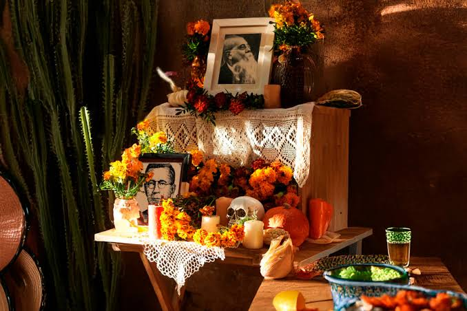
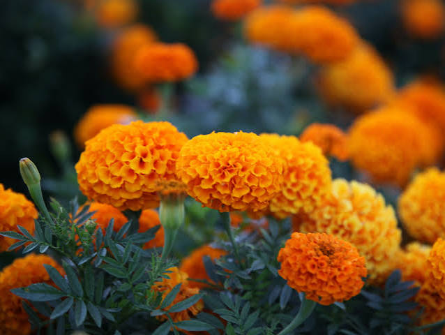
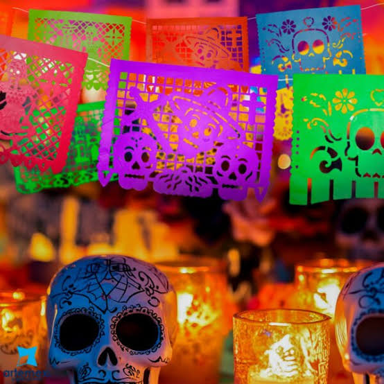
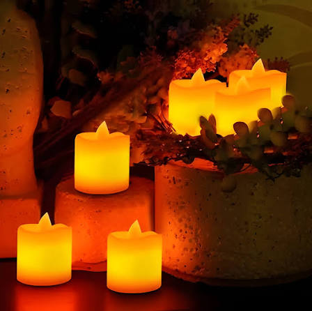
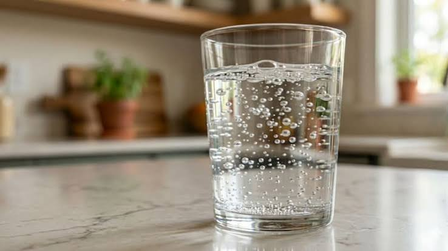
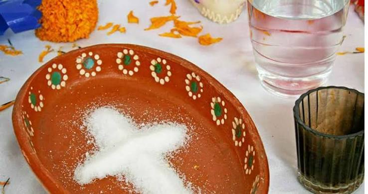
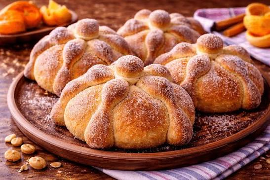
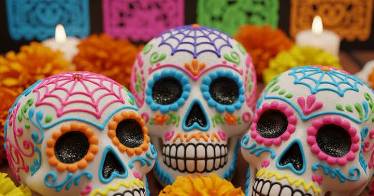
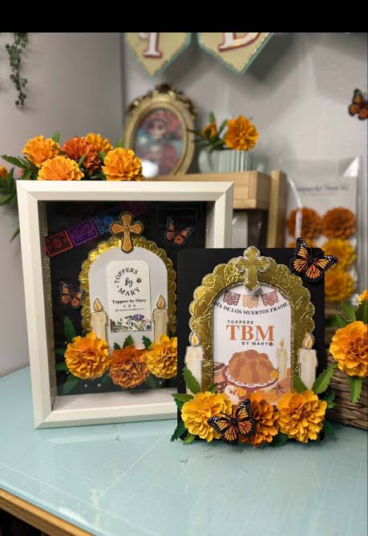
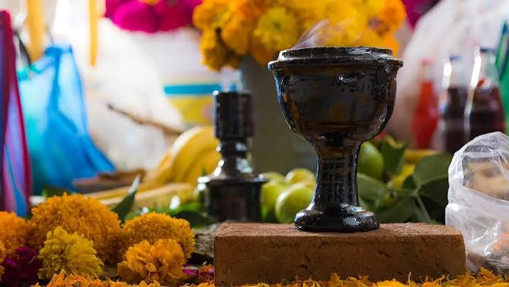

Mucho antes de la llegada de los españoles, culturas mesoamericanas como los mexicas, zapotecas, mixtecas y mayas ya realizaban rituales dedicados a sus antepasados. Para estas civilizaciones, la muerte no significaba el final definitivo, sino la transición hacia un nuevo plano de existencia. Los mexicas creían que las almas viajaban al Mictlán (el inframundo) y que durante cierta época del año los muertos tenían permiso para regresar al mundo terrenal a visitar a sus familiares.
Con la conquista española en el siglo XVI y la llegada de los evangelizadores católicos, las creencias indígenas se fusionaron con las festividades europeas del Día de Todos los Santos y Fieles Difuntos (1 y 2 de noviembre). El altar de muertos actual es el resultado directo de este sincretismo cultural, donde los rituales agrícolas ancestrales se integraron con símbolos cristianos como crucifijos, veladoras e imágenes de santos.
La estructura del altar se construye tradicionalmente mediante niveles que representan los escalones del viaje del alma:
Altar de 2 niveles: Representa la división entre el cielo y la tierra.
Altar de 3 niveles: Simboliza el cielo, la tierra y el inframundo (o la Santísima Trinidad en la visión católica).
Altar de 7 niveles: Es el más tradicional y representa los siete pasos o niveles que el alma debe cruzar para llegar al descanso eterno en el Mictlán o alcanzar la paz divina.
En todo altar bien integrado deben estar presentes los cuatro elementos naturales: el Aire (representado en el papel picado), el Fuego (representado en la luz de las velas), la Tierra (representada por las semillas, frutos y el pan) y el Agua (servida en vasijas o vasos).

Su color brillante y aroma guían a las almas desde el más allá hasta la ofrenda familiar. Se acostumbra hacer caminos con sus pétalos.

Representa el elemento aire y la alegría de la festividad. Sus diseños recortados agregan color y festividad al altar.

Representan el fuego y la fe. Su luz guía e ilumina el camino de regreso de las almas hacia sus antiguos hogares.

Sirve para mitigar la sed de las ánimas después de su largo recorrido desde el inframundo y simboliza la pureza.

Es un elemento purificador que ayuda a que el alma del difunto no se corrompa durante el viaje de ida y vuelta.

Simboliza el ciclo de la vida y la muerte. Las formas en la parte superior representan huesos y lágrimas de los difuntos.

Representan la presencia constante de la muerte dentro de la tradición, tomándola con dulzura y respeto.

Se coloca en el nivel más alto del altar para honrar la memoria del ser querido a quien está dedicada la ofrenda.

Limpia el lugar de malas vibras y malos espíritus para que las almas puedan visitar su antigua casa con seguridad.